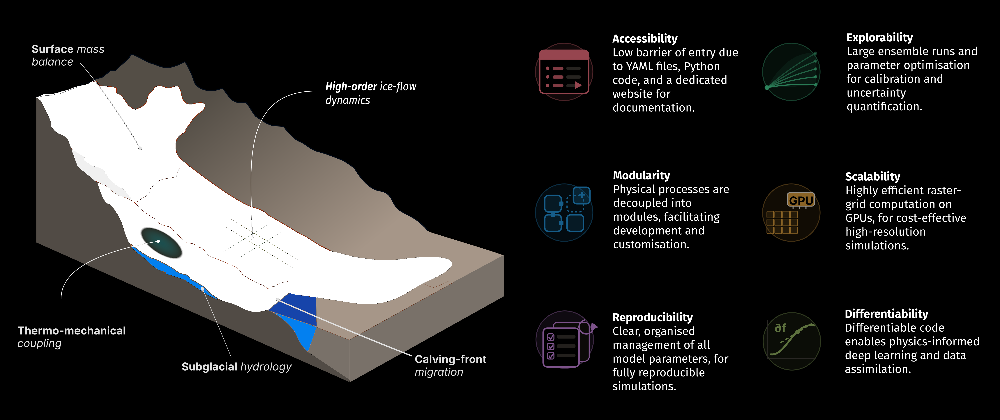
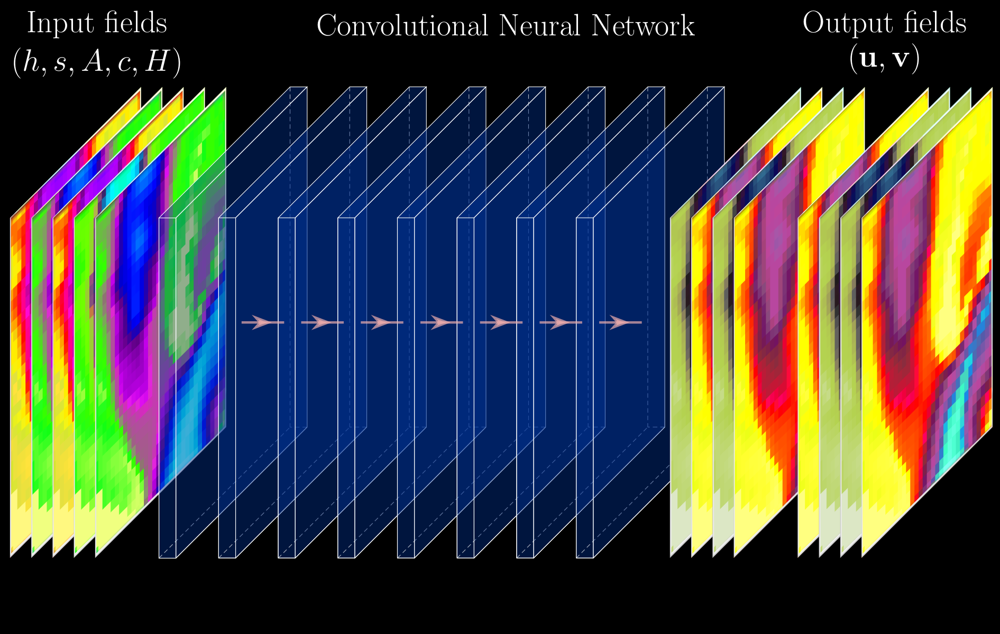
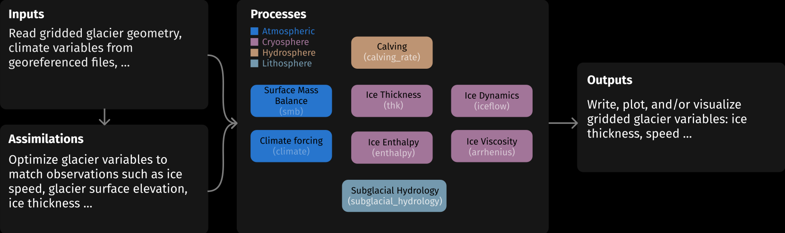
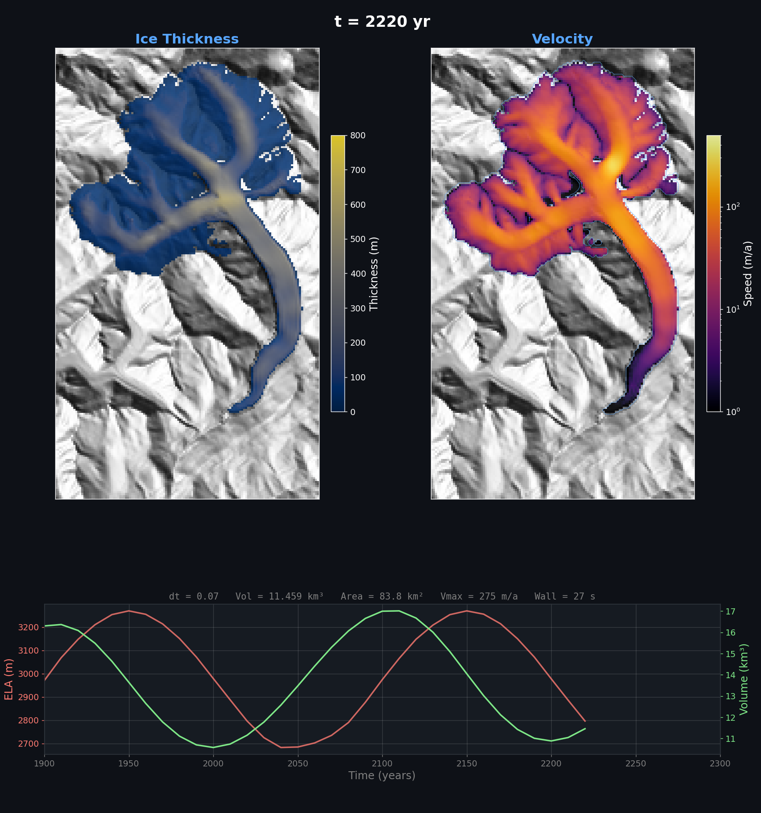

Glacier Modelling#
Session 2 — Lecture 2: Introduction to IGM#
Course format: 3 afternoons × 4 hours + 1 extra#
Hour 1 |
Hour 2 |
Hour 3 |
Hour 4 |
|
|---|---|---|---|---|
Week 1 |
Glacier processes |
Glacier modelling |
Tutorial |
Glacier selection |
Week 2 |
Intro to IGM, past & future runs |
Project |
Project |
Project |
Week 3 |
Extra experiments, report |
Project |
Project |
Project |
(Week 4 |
dates and rate add-on |
G. King’s course |
Project |
Project) |
From the tutorial to IGM#
Tutorial (Session 1): 1D/2D SIA minimal model, synthetic SMB, very simple code.
A “real” glacier model needs:
real data: topography, ice thickness, outlines, velocities, climate
a better ice-flow model than SIA (steep, narrow valleys; sliding)
a better SMB model (driven by temperature and precipitation)
efficiency: many runs (calibration, scenarios), on a laptop or in the cloud
➡️ IGM: an open-source Python model developed @ UNIL
IGM in one picture: a 3D glacier evolution model#

What does IGM solve?#
Same structure as the tutorial, at each time step:
Surface mass balance: \(SMB(x,y,t)\) from an ELA or from climate
Ice flow: 3D velocity field from a higher-order ice flow approximation, using a convolutional neural network on a raster grid:

Mass conservation: \(\dfrac{\partial h}{\partial t} + \nabla\cdot(\bar{\mathbf{u}}\,h) = SMB\) using an upwind scheme.
Update time, write outputs
IGM is modular#

Structure of an IGM run folder#
first-runs/ ← run igm_run from HERE
├── experiment/ PARAMETERS
│ ├── params_A_aletsch.yaml one YAML file = one experiment
│ └── common/iceflow_offline.yaml shared settings (ice-flow emulator)
├── data/ INPUTS
│ └── input.nc topography, thickness, velocities, climate...
└── outputs/ OUTPUTS: one folder per run (hydra.run.dir=...)
└── A_reference/
├── output.nc maps through time
├── output_ts.nc volume and area through time
├── dashboard_*.png quick-look images
└── .hydra/ all parameters used (config.yaml)
A parameter file (experiment/params.yaml)#
defaults:
- common: iceflow_offline # pre-trained ice-flow emulator
- override /inputs: [local] # 1) which data
- override /processes: [smb, iceflow, time, thk] # 2) which physics, in order
- override /outputs: [local, live_dashboard] # 3) which outputs
inputs:
local:
coarsening: {ratio: 2} # GRID: 2 = fast tests, 1 = final runs
processes: # only what differs from the defaults
smb:
method: simple # + the ELA history (array)
iceflow: # ICE FLOW
physics:
sliding: {tau_ref: 0.325}
time: {start: 1900.0, end: 2000.0, save: 10.0}
Run it: igm_run +experiment=params
Changing parameters#
Edit the YAML file, and keep 1 file per experiment (copy it before changing it), or
override from the command line, without editing the file:
igm_run +experiment=params processes.time.end=2050
igm_run +experiment=params inputs.oggm_shop.RGI_ID="RGI2000-v7.0-G-11-01189"
Results go to the folder given by
hydra.run.dir=..., with a copy of the full configuration (.hydra/config.yaml): every run is reproducible.All parameters and their defaults: https://igm-model.org (Modules)
oggm_shop module to retrieve glacier data#
Give an RGI v7 ID; IGM downloads (via OGGM) and maps to a 50 m / 100 m grid:
surface topography (Copernicus DEM)
ice thickness estimate (Millan et al. 2022, or consensus)
glacier outline (RGI v7)
observed surface velocities (Millan et al. 2022)
monthly climate 1901–present (GSWP3-W5E5)
calibrated SMB parameters (to match Hugonnet et al. 2021 elevation change)
Everything ends up in data/input.nc, cached for the next runs.
Two ways to force the SMB#
1. smb: method: simple — ELA + gradients, prescribed in time
few, intuitive parameters; no climate needed
good to explore sensitivity and to reconstruct the LIA
2. climate: method: oggm + smb: method: oggm — temperature-index model
monthly temperature & precipitation → accumulation and melt
observed climate extrapolated outside 1901–2019:
clim_trend_array:
- ["time", "delta_temp", "prec_scal"]
- [ 2020, 1.3, 1.0] # ≈ today (2000-2019 vs 1960-1990)
- [ 2100, 4.0, 1.0] # +4°C vs 1960-1990
melt_enhancer: scales melt (uncertain melt factors)
Ice-flow parameters#
Ice softness \(A\) (
arrhenius, default 78 MPa⁻³ a⁻¹): softer ice → faster deformationBasal sliding: Weertman-type law, parametrized by
tau_ref: basal shear stress (MPa) needed to slide atu_ref=100 m/yrlower
tau_ref→ more slippery bed → faster sliding
Tuned so that modelled speeds match observed ones. In every parameter file:
iceflow:
unified: {network: {pretrained_path: "dahunet_edu.keras"}} # off-line emulator
physics: {sliding: {tau_ref: 0.215, u_ref: 100.0}, viscosity: {arrhenius: 78.0}}
Fast runs: coarse grid and a small emulator#
Grid coarsening:
inputs.local.coarsening.ratio: 2➡️ cells 2× larger (e.g. 100 m → 200 m), 4× fewer cells, much faster runsuse
ratio: 2to test and calibrate (many runs)switch to
ratio: 1to finalize (runs and figures of your report):
igm_run +experiment=params_past inputs.local.coarsening.ratio=1 hydra.run.dir=outputs/past_final
Emulator
dahunet_edu: the smallest and fastest pre-trained ice-flow network of IGM (trained on mountain glaciers)
➡️ Your project: both are set once in experiment/common/my_glacier.yaml
What you get#
output.nc: 2D distributed maps through time (thickness, speed, SMB, …)output_ts.nc: ice volume and area through time ➡️ time seriesdashboard_XXXX.png: quick-look images during the run
Helpers in utils/helper.py (used in the notebooks): show_dashboard, compare_runs, animate_glacier_evolution, analyze_time_series, plot_flowline_evolution, compare_modeled_observed_velocity
Visualizing results: live_dashboard module#

Back in RenkuLab#
Same as in Session 1:
Open your project on renkulab.io → Resume your paused session (or Launch a new one)
Course material in
~/work/glamod/, your SWITCHdrive folder next to it
New today: we run IGM, a command-line program.
We work with three tools, side by side in JupyterLab.
How to work with IGM: three tools#
What |
Where |
|
|---|---|---|
Set the parameters |
YAML file ( |
one file = one experiment |
Run IGM |
Terminal (File → New → Terminal) |
keeps running even if you close the browser tab |
Look at the results |
Notebook, reading |
postprocessing only: never re-runs IGM |
Drag the tabs to split the screen.
Run IGM in the terminal#
cd ~/work/glamod/session2/first-runs # the folder that contains experiment/
igm_run +experiment=params_A_aletsch hydra.run.dir=outputs/A_reference
+experiment=params_A_aletsch→ readsexperiment/params_A_aletsch.yamlhydra.run.dir=outputs/A_reference→ always name your run folder: this name is how you find it in the notebookStop a run: Ctrl+C. Recall the last command: ↑
Each run folder contains output.nc (maps), output_ts.nc (volume, area), dashboard_*.png (quick looks) and .hydra/ (all parameters used).
Look at the results in a notebook#
from helper import * # course plotting helpers (utils/helper.py)
show_dashboard("outputs/A_reference") # last dashboard images
compare_runs(["outputs/A_reference", "outputs/A_ela_plus200"],
["reference", "ELA +200 m"]) # volume and area through time
Re-run the notebook as often as you like: it only reads the run folders
Figures for the report:
plt.savefig("figures/fig_volume.png", dpi=200, bbox_inches="tight")
Save your work: YAML files, notebook and figures → SWITCHdrive folder. Run folders can always be re-created.
When something goes wrong#
Symptom |
Fix |
|---|---|
|
Wrong launcher/environment → use the |
|
You are not in the folder that contains |
|
The run is not finished, or the folder name differs from |
Kernel dies / very slow |
Out of memory: restart the kernel, shorten the run, close other notebooks |
Data download ( |
Retry: the server may be busy when 20 students download at once |
Ask the assistant!
Hands-on: a past run and a future run (≈ 1 hour)#
In session2/first-runs/:
Step |
|
|---|---|
1 |
Set up the screen: YAML + terminal + notebook |
2–3 |
Past run: Aletsch, 1900–2000, ELA-based SMB ➡️ explore SMB and ice-flow parameters |
4–5 |
Future run: your glacier (RGI ID), climate-driven SMB, 2020–2100 ➡️ explore the climate |
6 |
Your project: the same for your glacier, LIA → 2100 |
All runs in the terminal; analysis.ipynb (one section per run) only plots.
Step 1 — Set up your screen#
File browser →
glamod/session2/first-runs/Open
analysis.ipynb, run the first cell (loads the plotting helpers)File → New → Terminal, drag it next to the notebook, then:
cd ~/work/glamod/session2/first-runs
ls experiment/
Double-click
experiment/params_A_aletsch.yamlto read it: which inputs, processes, outputs? Which SMB?
Step 2 — A past run: Aletsch 1900–2000#
In the terminal (≈ 1–2 min on CPU):
igm_run +experiment=params_A_aletsch hydra.run.dir=outputs/A_reference
Input:
data/input.nc(prepared for you), 100 m gridSMB: ELA rises from 2800 m (1900) to 2900 m (2000), with ablation/accumulation gradients
Then in the notebook, section Run A: input data, SMB profile, dashboard, volume & area, animation, modelled vs observed speeds.
Step 3 — Past run: explore SMB and ice-flow parameters#
One run = one named folder.
ELA 200 m higher: duplicate
params_A_aletsch.yaml→params_A_ela.yaml, add 200 to theelacolumn, then
igm_run +experiment=params_A_ela hydra.run.dir=outputs/A_ela_plus200
More slippery bed (default here:
tau_ref= 0.325 MPa) and 3. softer ice (default:arrhenius= 78):
igm_run +experiment=params_A_aletsch processes.iceflow.physics.sliding.tau_ref=0.15 hydra.run.dir=outputs/A_tau015
igm_run +experiment=params_A_aletsch processes.iceflow.physics.viscosity.arrhenius=150 hydra.run.dir=outputs/A_arrh150
Notebook: compare_runs([...]). How do volume and speeds change? Which run matches the observed speeds best?
Step 4 — A future run: your glacier 2020–2100#
Your RGI v7 ID: session1/1e-choose-your-glacier.md (here: Findelengletscher). In the terminal:
igm_run +experiment=params_B_any_glacier inputs.oggm_shop.RGI_ID=RGI2000-v7.0-G-11-01189 \
hydra.run.dir=outputs/B_RGI2000-v7.0-G-11-01189
First run:
oggm_shopdownloads the data (≈ 1 min), stored indata/and re-used next timeClimate: observed 1901–2019, then random years of 1960–1990 + +4 °C in 2100 (
clim_trend_array)
Notebook, section Run B: set RGI_ID, then plot input data, climate, dashboard, time series, speeds.
Step 5 — Future run: explore the climate#
Weaker warming: +2 °C (vs 1960–1990) in 2100, into another folder:
igm_run +experiment=params_B_any_glacier inputs.oggm_shop.RGI_ID=RGI2000-v7.0-G-11-01189 \
'processes.climate.oggm.clim_trend_array=[[time,delta_temp,prec_scal],[2020,1.3,1.0],[2100,2.0,1.0]]' \
hydra.run.dir=outputs/B_plus2
Notebook: compare_runs([run_B, "outputs/B_plus2"], ["+4°C", "+2°C"])
Is the modelled speed in 2020 close to the observed one? Which parameter would you change?
Also try a stronger melt:
processes.smb.oggm.melt_enhancer=1.5
The mini-project: model your own glacier#
How did my glacier evolve since the Little Ice Age (LIA, ~1850), and how will it evolve until 2100 under different climate scenarios?
Part |
What |
When |
|---|---|---|
A. Common base (everyone) |
Present → Past (LIA, calibration) → Future (scenarios) |
Sessions 2–3 |
B. Explorations (≥ 1) |
B1 SMB model, B2 ice-flow parameters |
today |
B3 response time, B4 moraines |
Session 3 |
|
C. Extensions (optional) |
open questions |
Session 3 |
Then: the report (Lecture 3). Deadline: to be announced
The project folder: project/my-glacier/#
my-glacier/ ← run igm_run from HERE
├── analysis.ipynb notebook: plots, figures, run log = your lab book
├── run_future.sh A: the future scenarios, one after the other
├── run_sensitivity.sh B2: grid of ice-flow parameters
├── experiment/
│ ├── common/my_glacier.yaml YOUR RGI ID + GRID (coarsening) + ICE FLOW, shared by all
│ ├── params_past.yaml A: 1700-2020, climate-driven SMB
│ ├── params_future.yaml A: 2020-2100, one scenario
│ ├── params_past_simple.yaml B1: 1700-2020, ELA-based SMB
│ ├── params_response_time.yaml B3: oscillating ELA (your own module in user/)
│ └── params_past_moraines.yaml B4: past run + debris particles
└── outputs/, figures/, data/ created by IGM and the notebook
First thing to do: put the RGI ID of your glacier in experiment/common/my_glacier.yaml
Part A, Step 1 — Present: check the initial state#
cd ~/work/glamod/project/my-glacier
igm_run +experiment=params_future processes.time.end=2021 hydra.run.dir=outputs/check
Downloads the data (once) to
data/, gives today’s modelled speedsNotebook:
plot_input_data,plot_climate(area, volume, thickness, observed speeds, climate)compare_modeled_observed_velocity: too fast / too slow? ➡️ adjusttau_reforarrheniusincommon/my_glacier.yaml(see B2)Compare with what you know: GLAMOS, swisstopo thickness map
Part A, Step 2 — Past: from the LIA to today#
We do not know the past geometry. Trick: start in 1700 from today’s geometry, cool the climate ➡️ advance to the LIA maximum (~1850), then retreat with the observed climate 1901–2019.
igm_run +experiment=params_past hydra.run.dir=outputs/past_v1
Calibrate the pre-1901
delta_temp(LIA maximum) andmelt_enhancer(today’s extent)Validate: LIA moraines, Siegfried map, today’s extent and volume
One file / one folder per try (
params_past_v2.yaml➡️outputs/past_v2), keep a run log in the notebookMind the response time: the 1700–1850 spin-up must be long enough
Part A, Step 3 — Future: 2020–2100#
delta_temp is relative to 1960–1990 (plot_climate prints the offsets):
2020: today’s offset (≈ +1.3 °C at Findelen)
2100: 1981–2010 offset + scenario warming (CH2018, Switzerland, ~2085 vs 1981–2010):
RCP2.6 / SSP1-2.6 |
RCP4.5 / SSP2-4.5 |
RCP8.5 / SSP5-8.5 |
|---|---|---|
≈ +0.6 to +1.9 °C |
≈ +2.0 to +3.3 °C |
≈ +3.3 to +5.4 °C |
run_future.sh: set your melt_enhancer and the 2 offsets at the top, then bash run_future.sh ➡️ committed (today’s climate), RCP2.6, RCP4.5, RCP8.5
Volume and area loss, front retreat, when does the glacier (nearly) disappear?
Exploration B1 — Does the SMB model matter?#
(choose ≥ 1 exploration in total, B1–B4; B3–B4 in Session 3)
igm_run +experiment=params_past_simple hydra.run.dir=outputs/past_simple_v1
Past with the ELA-based SMB (
params_past_simple.yaml): set today’s ELA (snowline on map.geo.admin.ch, GLAMOS); LIA ELAs ≈ 100–200 m lowerCompare with the climate-driven SMB (
params_past.yaml) withcompare_runs: LIA maximum, retreat, 2020Which one is easier to calibrate? Which one would you trust for the future, and why?
Exploration B2 — How well do we know the ice flow?#
bash run_sensitivity.sh # 3 x 4 combinations of arrhenius x tau_ref, 12 short runs (≈ 3 min)
compare_velocity_misfit: which combination fits the observed surface speeds best?Are several combinations equally good (trade-off between deformation and sliding)?
Redo the past or one scenario with the best one(s): how much does 2100 change?
Commands and plots: analysis.ipynb, section 4. Save your work (YAML, notebook, figures) to SWITCHdrive!